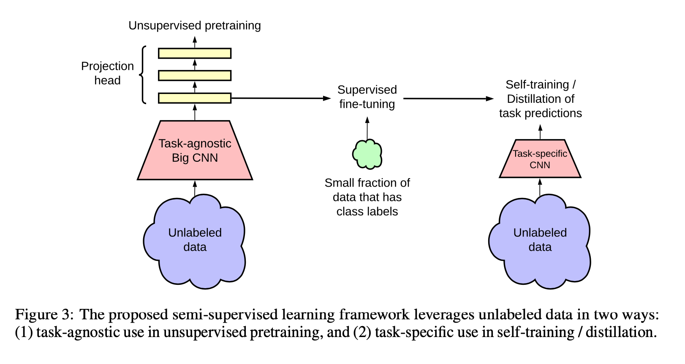
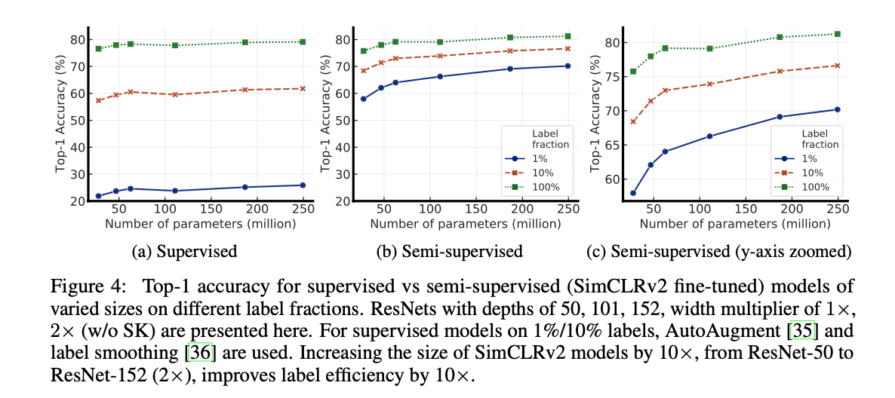
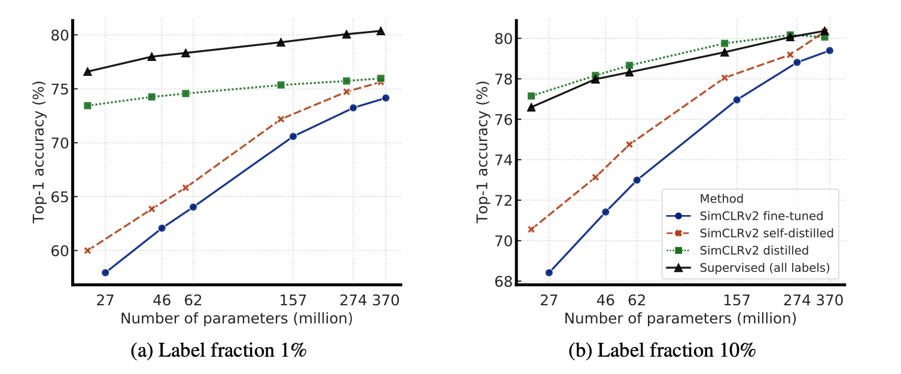
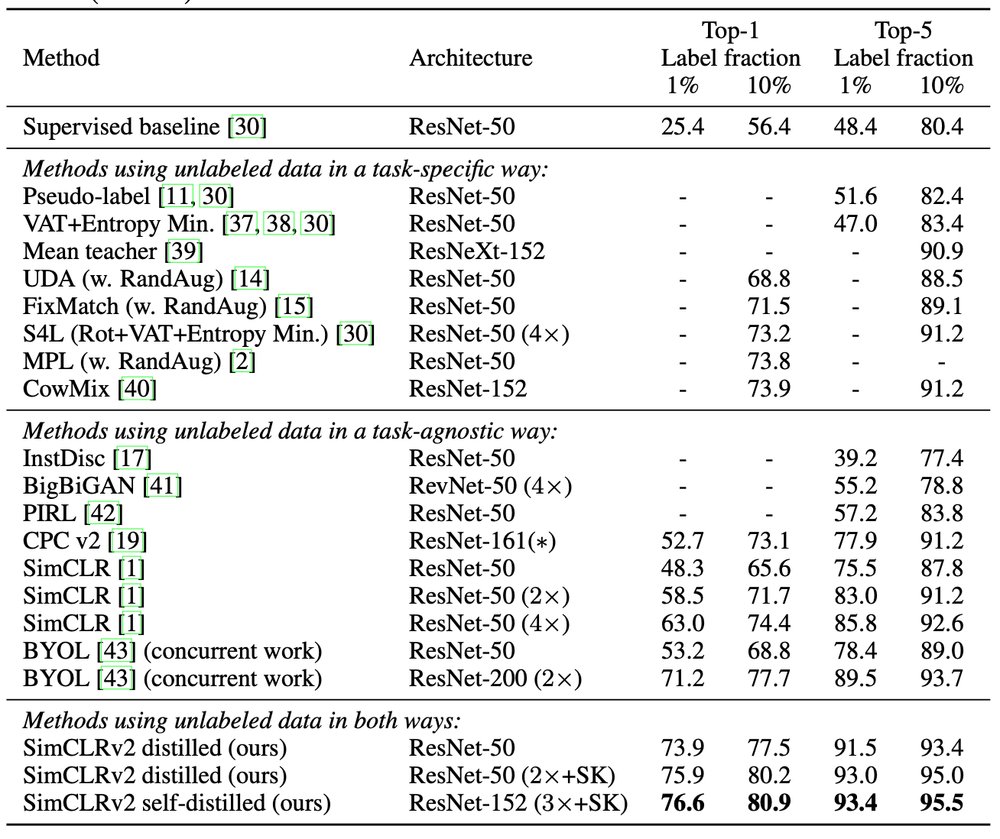

Preamble Just a quick aside, this version two of SimCLR seems to have come out shortly (~6mo) after the original paper, extending some of the findings, and making small tweaks.
1. Read the title and make an opinion of what’s in the paper (e.g., the area, the task)
This is a mouthful with two ingredients, (1) Big Self-supervised are (2) Strong Semi-supervised. It differentiates between Models (1) and Learners (2). Self-supervised is generally what I consider the pre-training step. Semi-supervised I think means the general practice of training where not every datapoint is labeled (ie Supervised). Seems to argue the bigness of the model correlates to some metric of strength (probably predictive accuracy).
2. Read the abstract well and form a hypothesis of
- What’s new in the paper?
- Do you have a clear overview about what the paper is all about?
One paradigm for learning from few labeled examples while making best use of a large amount of unlabeled data is unsupervised pretraining followed by supervised fine-tuning.
This I believe will soon be a standard practice in ML for training models. In every case I can think of, it is much easier to get data than labels. Thus if there is strong benefit and frameworks to execute this sort of processing, then the field will move in this direction as a standard practice.
We find that, the fewer the labels, the more this approach (task-agnostic use of unlabeled data) benefits from a bigger network.
This looks to be the key contribution, that you need to have sufficient size when working with low number of labeled data.
After fine-tuning, the big network can be further improved and distilled into a much smaller one with little loss in classification accuracy by using the unlabeled examples for a second time, but in a task-specific way
This lays out a three step approach, which they describe next in the abstract.
- unsupervised pretraining of a big ResNet model using SimCLRv2,
- supervised fine-tuning on a few labeled examples
- distillation with unlabeled examples for refining and transferring the task-specific knowledge.
I do have a clear overview of the paper, and one question to find out is why this method of pretraining → task-specific → distillation shows benefit. It could be a small piece of their setup, that actually includes a novel contribution that is providing the general improvement of accuracy.
3. Look at the images and extract a set of “questions” about what is not clear about their method from the images. Now your job is to answer these questions by reading the paper.
This paper summarizes the paper’s three tiered approach:

Many of the images are arguing for the improvement that big-models can make when label-percent goes down. For instance, Fig4 shows the deltas that using bigger models can make, for a given percent of the data which is labeled.

The distillation graphs are interesting. I wonder what they want to convey by this graph. What I see is at a sufficient model size, all methods approach a similar accuracy, but there is a big offset on the low model size if using distillation given only a percentage of labels.

They actually discuss this in the appendix:
It is also worth noting that these results may reflect a “ceiling effect”: as the performance gets closer to the ceiling, the improvement becomes smaller.
4. Read the method aiming to answer your “questions” about the paper. Focus on understanding only the things relevant for the story (i.e., to understand the contribution).
Although it has received little attention in computer vision, this approach has become predominant in natural language processing
Interesting observation. I would want to know why this is the case.
We show that although big models are important for learning general (visual) representations, the extra capacity may not be necessary when a specific target task is concerned. Therefore, with the task-specific use of unlabeled data, the predictive performance of the model can be further improved and transferred into a smaller network.
This I think is a main point of the distillation process. If you have enough data, you can train a model straight up, but if you do not have enough labels, the best you can to is learn the best general representations possible (big teacher), and then distill down to an efficient student (smaller student). There must bee something about learning in the task specific way that allows you to produce a top model (marginally though).
5. Read the experiments to convince you that the show results are caused by their claim. Be aware that the experiments highlighted are the best scenarios and are fully hyper-parameter tuned.
This table does a good job of explaining the landscape of similar techniques. It doesn’t seem to be very busy because from what I can tell, these authors are contributor to a majority of lines in the task-agnostic frame. However, their results look good and able to produce compelling results with a fraction of the labels.

6. Make sure you answered all your questions. Did the authors convince you that their story has the effect that they claim?
The distillation is an interesting technique I have yet to spend time with. I hope to get a better feel for this, and anecdotally, I’ve found DistillBert to be subjectively better than its BERT counterpart.